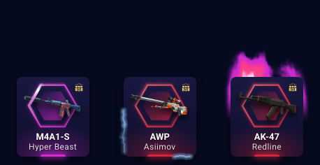
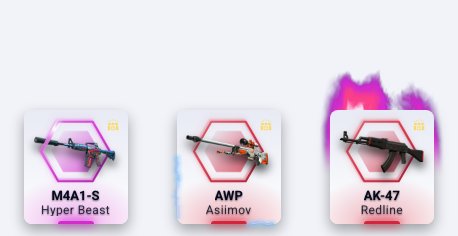

M4A1-SHyper BeastFactory New · ClassifiedSteam market
Chance4.600 %
Tickets1 791 to 3 890
The moving layer a script lays over a drop whose chance in its case is 5 % or less: A, a bright arc running round the drop's ring; B, lightning round the drop; C, plasma burning out of it. The rarest that applies. Everything on this page is drawn by design/system/components/rare-mark.css through index.css, the same file a screen will load, on the hosts that lay it.
The Rare mark holds no component: it is one span a script lays into a host, and it never takes the pointer. Three hosts lay it, each placing it on its own: the Feed tile (level 2) in the ticker, the Drop card (level 2) in What is in this case, and the run's card of the Case stage (level 3). The mark's own part is the moving layer: the turning light and its ring-shaped window, the frames of lightning and plasma and the loop that steps through them. Where it stands, how large it is and when it shows are the host's.
| Part | Class or element | What to change there |
|---|---|---|
| The layer | .rare-mark (a span, aria-hidden="true") | absolute over its host, never takes the pointer; the script gives each its own animation-delay so two marks never flicker in step |
| A, the ring's current | .rare-mark--ring with one <i> | the window is --shape-ring-mask, the drop's hexagon stroke; the <i> is a conic light, white (--bg-mark-on-plate) mixed with the host's --rarity, turning once in 1.4s |
| B, lightning | .rare-mark--bolt | 24 frames of --art-fx-bolt stepped in 1s, past the host's edge by --mark-bolt-out |
| C, plasma | .rare-mark--fire | 24 frames of --art-fx-plasma-tall stepped in 1.2s, behind the host's ground (z-index: -2), rising --mark-fire-rise over it |
| Host geometry | --mark-ring-top, -w, -h, --mark-bolt-out, --mark-fire-rise, --mark-fire-side | set by the host, not here: the Feed tile sets them (and smaller under 600px); the Drop card and the Case stage's card place the layer with their own rules |
One axis of data, the drop's chance in its case, and the host decides the size. The chance is the host's data-chance, a sample (D-124). Sizes under each sample are read from the rendered mark, not from the stylesheet.
Chance4.600 %
Tickets1 791 to 3 890

Chance1.150 %
Tickets641 to 1 790

Chance0.640 %
Tickets1 to 640
 USP-SKill Confirmed14.20M4A1-SHyper Beast24.60AK-47Redline47.30M4A1-SHyper Beast24.60
USP-SKill Confirmed14.20M4A1-SHyper Beast24.60AK-47Redline47.30M4A1-SHyper Beast24.60To mark, in motion, the drops that were rare where they came from, so the eye finds them in a run of ordinary ones: the reveal that feels real is the product's job (design principle 2), and a mark that moves for no reason would be cut by the same principle. The mark is earned by a published figure, the drop's chance in its case, never by its price or by a choice of ours, so what it says can be checked (principle 1). It is laid by the product's script (design/kit/motion.js, mark()), never written into a page by hand.
Over a drop whose chance is 5 % or less, on a host that places it: a Feed tile in the ticker, a Drop card in What is in this case, a run's card on the Case stage.
A rare drop landing in the ticker, with its chance large in the corner, a crown and its own lights, is the Feed tile's own --rare form. The tier of a skin is its ring's colour, the host's --tier or --rarity, not a mark. A word about a state (Live, Verified) is a Badge.
No states: it is not interactive. The mark never takes the pointer or focus. What this page shows is what the product's script sets: motion.js reads the host's data-chance, puts .is-mark-a, -b or -c on the host and lays one span.rare-mark in: A into the host's ring (.feed-tile__hit, .drop-card__art, else the card itself), B at the host's end, C as its first child. The page does not run the script; the samples carry the markup it writes. The Drop card's reveal under the pointer and with focus inside is the Drop card's state, not the mark's.
For whoever asked for less motion the mark stands still, as rare-mark.css has it: the light at its first turn, the first frame of the lightning and the plasma. Below, the three marks on Feed tiles shot with reduced motion, dark on the left and light on the right.


animation: none| Token | Kind | Dark | Light |
|---|
Read live from tokens.css. No component token and no colour primitive read directly: the ring's white is --bg-mark-on-plate, a white mark on a picture, white in both themes; its tint is the host's --rarity. The pictures are --art-fx-bolt and --art-fx-plasma-tall (design/system/art.css), the ring's window --shape-ring-mask. The keyframes rare-mark-turn and rare-mark-step are this file's. The ring's light reads --rarity: the Feed tile sets it, and since D-266 (Q2) the Drop card and the run's card pass their --tier to it, where kit.css drew A's light as nothing.
File: design/system/components/rare-mark.css, loaded by design/system/index.css in the atoms' group, before the hosts that place it.
<!-- what motion.js lays on, by the host's data-chance --> <span aria-hidden="true" class="rare-mark rare-mark--ring" style="animation-delay: -0.4s"><i style="animation-delay: -0.4s"></i></span> <!-- A, chance 5 % or less, in the host's ring --> <span aria-hidden="true" class="rare-mark rare-mark--bolt" style="animation-delay: -0.7s"></span> <!-- B, 2.5 % or less, at the host's end --> <span aria-hidden="true" class="rare-mark rare-mark--fire" style="animation-delay: -0.2s"></span> <!-- C, 1 % or less, the host's first child -->
Stands on: Home, the case screen, the catalogue, Deposit, My items, Provably fair, Sign in (the ticker's Feed tiles), and on the case screen also the Drop cards of What is in this case and the run's cards of the Case stage. Until step 8 those screens still read kit.css. The rule a screen writes because of the mark, the section head held over a Drop card's flame (.contents:has(.drop-card.is-mark-c) .sec-head), stays in kit.css for step 6.